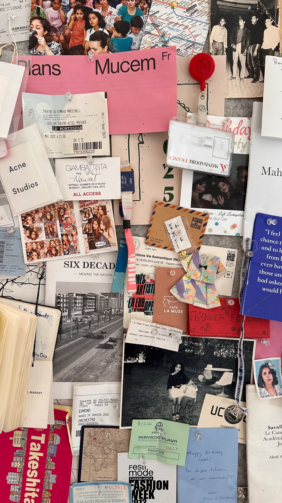
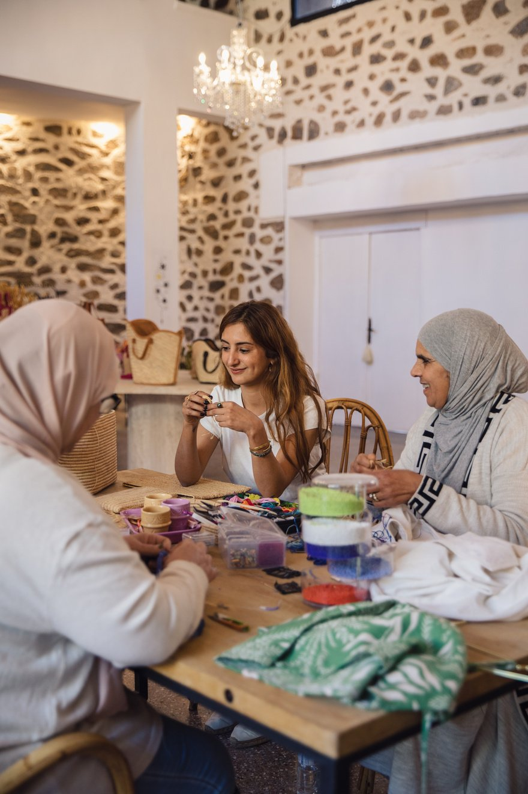
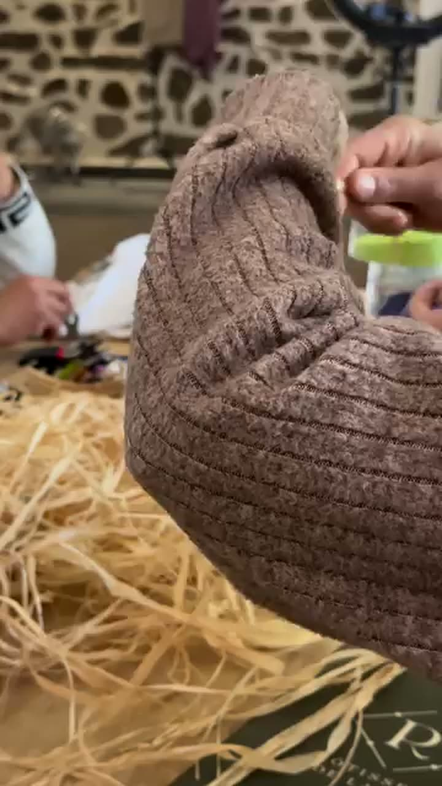
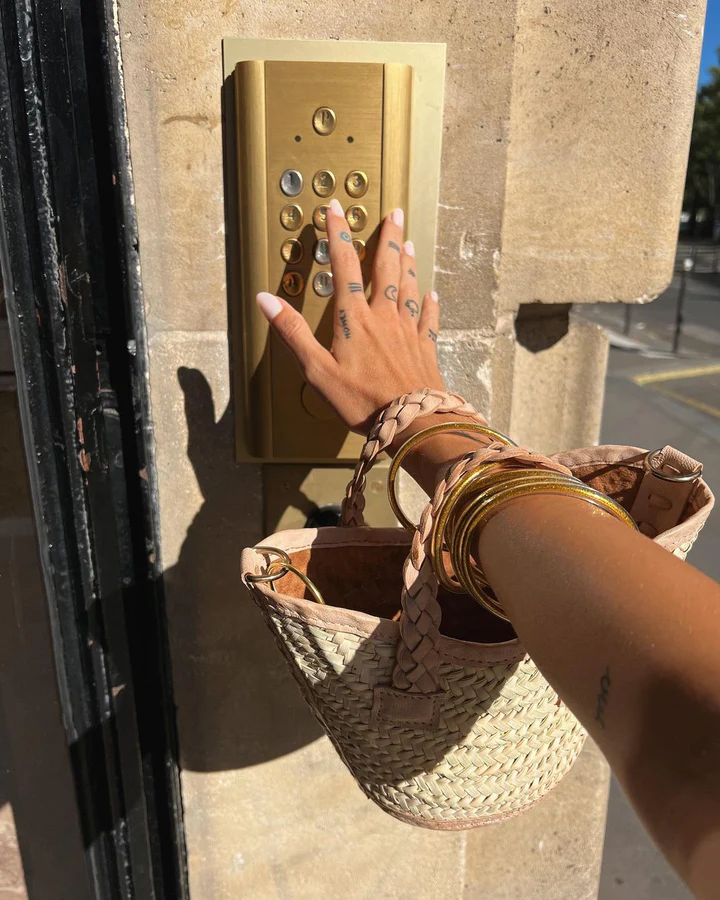
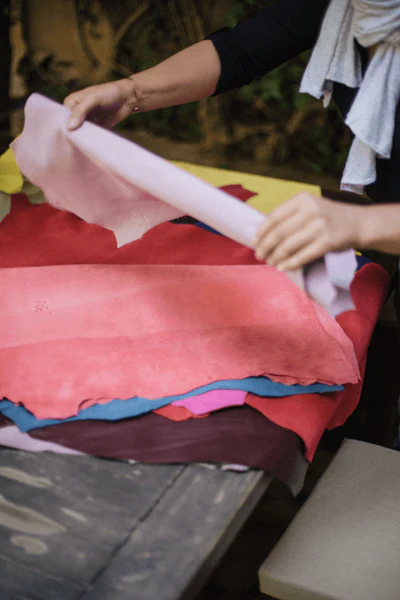
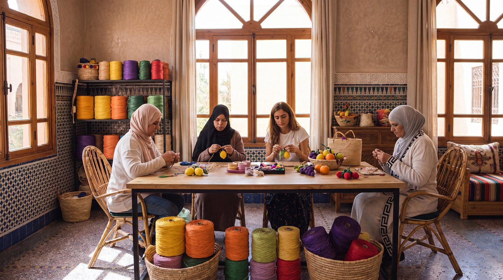
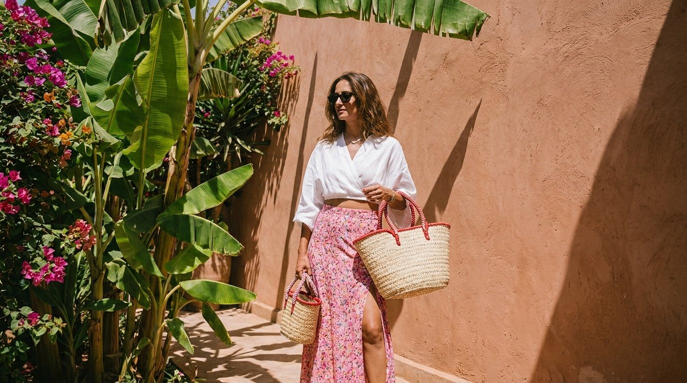
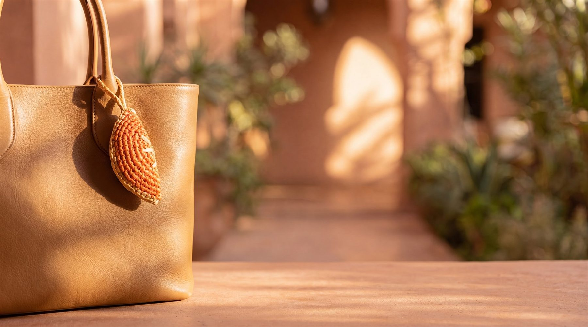

66 Rue Yougoslavie, Guéliz · Marrakech
Le studio à GuélizThe Studio in GuélizEl studio en GuélizGuéliz'deki stüdyoالاستوديو في Guéliz
Une porte sur une rue de Guéliz — là où chaque pièce YZA commence et s'achève. Le raphia, le doum et la feuille de bananier arrivent bruts ; ils repartent en objets finis, un à un. Aucun moule, aucun raccourci. Juste des mains, du temps, et 37 ans de geste dans la pièce. Le studio est ouvert aux visiteurs : venez voir le travail en cours et repartez avec une pièce, directement des mains qui l'ont faite.One door on one street in Guéliz - where every YZA piece begins and ends. Raffia, doum and banana leaf arrive rough; they leave as finished objects, one at a time. No moulds, no shortcuts. Just hands, time, and 37 years of gesture in the room. The studio is open to visitors: come see the work in progress and carry a piece home from the very hands that made it.Una puerta en una calle de Guéliz — donde cada pieza YZA empieza y termina. La rafia, el doum y la hoja de banano llegan en bruto; salen como objetos terminados, uno a uno. Sin moldes, sin atajos. Solo manos, tiempo y 37 años de gesto en la sala. El studio está abierto a las visitas: ven a ver el trabajo en marcha y llévate una pieza de las mismas manos que la hicieron.Guéliz'de bir sokakta tek bir kapı — her YZA parçasının başladığı ve bittiği yer. Rafya, doum ve muz yaprağı ham gelir; birer birer bitmiş nesneler olarak çıkar. Kalıp yok, kestirme yok. Yalnızca odadaki eller, zaman ve 37 yıllık el emeği. Stüdyo ziyaretçilere açık: süren işi görmeye gelin ve bir parçayı onu yapan ellerden alıp götürün.بابٌ واحد في شارعٍ بـ Guéliz — حيث تبدأ كل قطعة YZA وتنتهي. تصل الرافيا والدوم وورق الموز خامًا؛ وتغادر أشياءَ مكتملة، واحدةً تلو الأخرى. لا قوالب، لا اختصارات. فقط أيادٍ ووقت و37 عامًا من الحرفة في الغرفة. الاستوديو مفتوح للزوّار: تعالَي لرؤية العمل وهو يجري، وعودي بقطعة من الأيادي ذاتها التي صنعتها.
Venez voir le travailCome and see the workVen a ver el trabajoGelin, işi görünتعالَي وشاهدي العمل
Des sacs en plein tissage, des perles qu'on noue, du raphia qui sèche à la lumière. Poussez la porte — il y a presque toujours quelqu'un à l'établi, et presque toujours de l'eau sur le feu.Bags mid-weave, beads being knotted, raffia drying in the light. Push the door - there is almost always someone at the bench, and almost always a kettle on.Bolsos a medio tejer, cuentas que se anudan, rafia secándose a la luz. Empuja la puerta — casi siempre hay alguien en el banco, y casi siempre agua al fuego.Yarı örülmüş çantalar, düğümlenen boncuklar, ışıkta kuruyan rafya. Kapıyı itin — tezgâhta neredeyse her zaman biri vardır, ve neredeyse her zaman ocakta su.حقائب في منتصف الحياكة، خرزٌ يُعقد، ورافيا تجفّ في الضوء. ادفعي الباب — هناك دائمًا تقريبًا أحدٌ على الطاولة، وغالبًا إبريق شايٍ على النار.

Lundi 12 h – 16 h · mardi fermé
Mercredi – dimanche 12 h – 20 hMonday 12h - 16h · Tuesday closed
Wednesday - Sunday 12h - 20hLunes 12 h – 16 h · martes cerrado
Miércoles – domingo 12 h – 20 hPazartesi 12.00 – 16.00 · salı kapalı
Çarşamba – pazar 12.00 – 20.00الإثنين 12 – 16 · الثلاثاء مغلق
الأربعاء – الأحد 12 – 20




Les femmes de l'atelierThe Women of the AtelierLas mujeres del atelierAtölyenin kadınlarıنساء الأتيليه
Fatima exerce ce métier depuis 37 ans. Elle lit le raphia comme d'autres lisent une page — à la tension, à la densité, à la façon dont le fil tient. Ses mains savent avant elle.Fatima has been at this craft for 37 years. She reads raffia the way others read a page - by tension, density, the way the thread holds. Her hands know before she does.Fatima lleva 37 años en este oficio. Lee la rafia como otras leen una página — por la tensión, la densidad, la forma en que el hilo aguanta. Sus manos saben antes que ella.Fatima bu zanaatı 37 yıldır sürdürüyor. Rafyayı başkalarının bir sayfayı okuduğu gibi okur — gerginliğinden, yoğunluğundan, ipin tutuşundan. Elleri ondan önce bilir.تمارس فاطمة هذه الحرفة منذ 37 عامًا. تقرأ الرافيا كما يقرأ غيرها صفحة — من شدّها، وكثافتها، وطريقة تماسك الخيط. يداها تعرفان قبلها.
À ses côtés, Lala Fatima façonne à la main les pompons de perles dorées et brode les signes berbères qui signent chaque pièce Jawhara. Ce qu'elle réalise, aucune machine ne sait tout à fait le refaire.Beside her, Lala Fatima hand-crafts the golden bead tassels and embroiders the Berber signs that mark every Jawhara piece as hers. What she makes cannot quite be replicated by a machine.A su lado, Lala Fatima confecciona a mano las borlas de cuentas doradas y borda los signos bereberes que marcan cada pieza Jawhara como suya. Lo que hace no puede replicarlo una máquina — no del todo.Yanında, Lala Fatima altın boncuklu püskülleri elle yapar ve her Jawhara parçasını ona ait kılan Berberi işaretleri işler. Yaptığını bir makine tıpatıp kopyalayamaz.إلى جانبها، تصنع لالة فاطمة يدويًا شراشيب الخرز الذهبي وتطرّز الرموز الأمازيغية التي تَسِم كل قطعة Jawhara بتوقيعها. ما تصنعه لا تستطيع آلة أن تكرّره تمامًا.
Cet atelier est 100 % féminin. Chaque pièce que vous portez soutient des mains spécialisées et un savoir-faire qui demande des décennies à maîtriser.This atelier is 100% women-run. Every piece you carry supports specialised hands and a craft that takes decades to master.Este atelier es 100 % femenino. Cada pieza que llevas sostiene manos especializadas y un oficio que tarda décadas en dominarse.Bu atölye %100 kadın işletmesidir. Taşıdığınız her parça, uzman elleri ve ustalaşması on yıllar süren bir zanaatı destekler.هذا الأتيليه نسائي بالكامل. كل قطعة تحملينها تدعم أيادي متخصّصة وحرفةً يستغرق إتقانها عقودًا.
Les matièresThe materialsLos materialesMalzemelerالمواد
Raphia, doum, feuille de bananier.Raffia, doum, banana leaf.Rafia, doum, hoja de banano.Rafya, doum, muz yaprağı.رافيا، دوم، ورق موز.
Trois fibres végétales, sourcées et séchées, confiées à l'atelier. Chacune plie différemment, prend la couleur différemment, vieillit différemment. Les tisseuses savent au toucher — quel brin pour une base, lequel pour le bord d'une anse, à quelle tension tirer pour tenir la forme des années durant.Three plant fibres, sourced and dried, handed to the atelier. Each bends differently, holds colour differently, ages differently. The weavers know by touch - which strand for a base, which for a handle edge, how tight to pull to hold shape for years.Tres fibras vegetales, seleccionadas y secadas, entregadas al atelier. Cada una se dobla distinto, toma el color distinto, envejece distinto. Las tejedoras saben al tacto — qué hebra para una base, cuál para el borde de un asa, con cuánta tensión tirar para mantener la forma durante años.Üç bitkisel lif; tedarik edilip kurutulur ve atölyeye verilir. Her biri farklı bükülür, rengi farklı tutar, farklı yaşlanır. Dokumacılar dokunuşla bilir — taban için hangi tel, sap kenarı için hangisi, yıllarca biçimi korumak için ne kadar sıkı çekileceğini.ثلاثة ألياف نباتية، تُنتقى وتُجفّف وتُسلَّم للأتيليه. كلٌّ ينثني بطريقة، ويمسك اللون بطريقة، ويشيخ بطريقة. تعرف النسّاجات باللمس — أيّ خصلة للقاعدة، وأيّها لحافة المقبض، وبأيّ شدٍّ يُسحب ليحفظ الشكل سنوات.
Une finition cuir à chaque bord, là où le sac s'use le plus. Un travail lent, fait pour survivre d'une décennie à la mode jetable.A leather finish at every edge where a bag wears hardest. Slow work, made to outlast fast fashion by a decade.Un acabado en cuero en cada borde, donde el bolso se desgasta más. Trabajo lento, hecho para durar una década más que la moda rápida.Çantanın en çok yıprandığı her kenarda deri finiş. Yavaş bir iş, hızlı modayı on yıl geride bırakmak için yapılmış.تشطيب جلدي عند كل حافة حيث تتآكل الحقيبة أكثر. عملٌ بطيء، صُنع ليدوم عقدًا بعد أن تزول الموضة السريعة.



Repartez avec une pièceTake a piece homeLlévate una piezaBir parçayı evine götürخذي قطعة معك
Que vous veniez à Guéliz ou que vous commandiez de loin, chaque pièce sort des mêmes mains. Éditions limitées — une fois parties, elles ne reviennent pas.Whether you come to Guéliz or shop from afar, every piece leaves the same hands. Limited editions - once they're gone, they're gone.Tanto si vienes a Guéliz como si compras desde lejos, cada pieza sale de las mismas manos. Ediciones limitadas — una vez agotadas, no vuelven.İster Guéliz'e gelin ister uzaktan alışveriş yapın, her parça aynı ellerden çıkar. Sınırlı sayıda — bittiğinde, biter.سواء جئتِ إلى Guéliz أو تسوّقتِ من بعيد، كل قطعة تخرج من الأيادي نفسها. إصدارات محدودة — وما إن تنفد حتى تختفي.